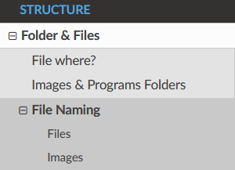

TocTree¶
TocTree, Menu, Index, Tree Content, Guide Line are some of the names that we’ll use to refer to the same thing. In section First Build we spoke briefly about it.
Headings¶
Adding headings is another way to add structure within your files by having Titles, Subtitles and Subsubtitles like so.
The following symbols can be used to create headings. Use this symbol hierarchy.
=*-^"+#
As an example:
==================
H1: document title
==================
Introduction text.
*********
Sample H2
*********
Sample content.
**********
Another H2
**********
Sample H3
---------
Sample H4
^^^^^^^^^
Sample H5
"""""""""
Sample H6
+++++++++
And some text.
There should be only one H1 in a document.
Headings structure is determined only by occurrence order.
If you need more than H4, consider creating a new file.